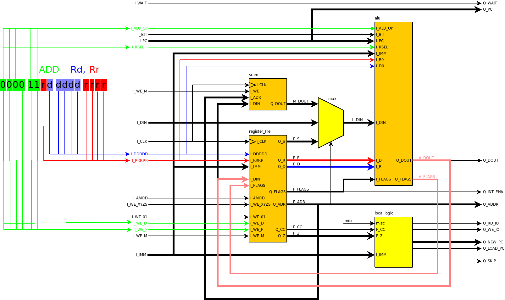

| Previous Lesson | Table of Content | Next Lesson |
|---|
In this lesson we will describe the opcode decoder. We will also learn how the different instructions provided by the CPU will be implemented. We will not describe every opcode, but rather groups of instructions whose individual instructions are rather similar.
The opcode decoder is the middle state of our CPU pipeline. Therefore its inputs are defined by the outputs of the previous stage and its outputs are defined by the inputs of the next stage.
Most data buses of the CPU are contained in the data path. In contrast, most control signals are generated in the opcode decoder. We start with a complete list of these control signals and their purpose. There are two groups of signals: select signals and write enable signals. Select signals are used earlier in the execution of the opcode for controlling multiplexers. The write enable signals are used at the end of the execution to determine where results shall be stored. Select signals are generally more time-critical that write enable signals.
The select signals are:
The write enable signals are:
The VHDL code of the opcode decoder consists essentially of a huge case statement. At the beginning of the case statement there is a section assigning a default value to each output. Then follows a case statement that decodes the upper 6 bits of the opcode:
66 process(I_CLK) 67 begin 68 if (rising_edge(I_CLK)) then 69 -- 70 -- set the most common settings as default. 71 -- 72 Q_ALU_OP <= ALU_D_MV_Q; 73 Q_AMOD <= AMOD_ABS; 74 Q_BIT <= I_OPC(10) & I_OPC(2 downto 0); 75 Q_DDDDD <= I_OPC(8 downto 4); 76 Q_IMM <= X"0000"; 77 Q_JADR <= I_OPC(31 downto 16); 78 Q_OPC <= I_OPC(15 downto 0); 79 Q_PC <= I_PC; 80 Q_PC_OP <= PC_NEXT; 81 Q_PMS <= '0'; 82 Q_RD_M <= '0'; 83 Q_RRRRR <= I_OPC(9) & I_OPC(3 downto 0); 84 Q_RSEL <= RS_REG; 85 Q_WE_D <= "00"; 86 Q_WE_01 <= '0'; 87 Q_WE_F <= '0'; 88 Q_WE_M <= "00"; 89 Q_WE_XYZS <= '0'; 90 91 case I_OPC(15 downto 10) is 92 when "000000" =>src/opc_deco.vhd
...
653 when others => 654 end case; 655 end if; 656 end process;src/opc_deco.vhd
The opcode decoder generates quite a few outputs. A typical instruction,
however, only sets a small fraction of them. For this reason we provide a
default value for all outputs before the top level case statement,
as shown above.
For each instruction we then only need to specify those outputs that
differ from the default value.
Every default value is either constant or a function of an input. Therefore the opcode decoder is a typical "stateless" pipeline stage. The default values are chosen so that they do not change anything in the other stages (except incrementing the PC, of course). In particular, the default values for all write enable signals are '0'.
Designing an opcode starts with asking a number of questions. The answers are found in the specification of the opcode. The answers identify the outputs that need to be set other than their default values. While the instructions are quite different, the questions are always the same:
Equipped with this checklist we can implement all instructions. We start with the simplest instructions and proceed to the more complex instructions.
The simplest instruction is the NOP instruction which does - nothing. The default values set for all outputs do nothing either so there is no extra VHDL code needed for this instruction.
We call an instruction monadic if its opcode contains one register number and if the instructions reads the register before computing a new value for it.
Only items 1. and 2. in our checklist apply. The default value for DDDDD is already correct. Thus only ALU_OP, WE_D, and WE_F need to be set. We take the DEC Rd instruction as an example:
465 -- 466 -- 1001 010d dddd 1010 - DEC 467 -- 468 Q_ALU_OP <= ALU_DEC; 469 Q_WE_D <= "01"; 470 Q_WE_F <= '1';src/opc_deco.vhd
All monadic arithmetic/logic instructions are implemented in the same way; they differ by their ALU_OP.
We call an instruction dyadic if its opcode contains two data sources (a data source being a register number or an immediate operand). As a consequence of the two data sources, dyadic instructions occupy a larger fraction of the opcode space than monadic functions.
We take the ADD Rd, Rr opcode as an example.
Compared to the monadic functions now item 3. in the checklist applies as well. This would mean we have to set RRRRR but by chance the default value is already correct. Therefore:
165 -- 166 -- 0000 11rd dddd rrrr - ADD 167 -- 168 Q_ALU_OP <= ALU_ADD; 169 Q_WE_D <= "01"; 170 Q_WE_F <= '1';src/opc_deco.vhd
The dyadic instructions do not use the I/O address space and therefore they completely execute inside the data path. The following figure shows the signals in the data path that are used by the ADD Rd, Rr instruction:

The opcode for ADD Rd, Rr is 0000 11rd dddd rrrr. The opcode decoder extracts the 'd' bits into the DDDDD signal (blue), the 'r' bits into the RRRRR signal (red), and computes ALU_OP, WE_D, and WE_F from the remaining bits (green) as above.
The register file converts the register numbers Rd and Rr that are encoded in the DDDDD and RRRRR signals to the contents of the register pairs at its D and R outputs. The lowest bit of the DDDDD and RRRRR signals also go to the ALU (inputs D0 and R0) where the odd/even register selection from the two register pairs is performed.
The decoder also selects the proper ALU_OP from the opcode, which is ALU_ADD in this example. With this input, the ALU computes the sum of the its D and R inputs and drives its DOUT (pink) with the sum. It also computes the flags as defined for the ADD opcode.
The decoder sets the WE_D and WE_F inputs of the register file so that the DOUT and FLAGS outputs of the ALU are written back to the register file.
All this happens within a single clock cycle, so that the next instruction can be performed in the next clock cycle.
The other dyadic instructions are implemented similarly. Two instructions, CMP and CPC, deviate a little since they do not set WE_D. Only the flags are set as a result of the comparison. Apart from that, CMP and CPC are identical to the SUB and SBC; they don't have their own ALU_OP but use those of the SUB and SBC instructions.
The MOV Rd, Rr instruction is implemented as a dyadic function. It ignores it first argument and does not set any flags.
Some of the dyadic instructions have an immediate operand (i.e. the operand is contained in the opcode) rather than using a second register. For such instructions, for example ANDI, we extract the immediate operand from the opcode and set RSEL. Since the immediate operand takes quite some space in the opcode, the register range was restricted a little and hence the default DDDDD value needs a modification.
263 -- 264 -- 0111 KKKK dddd KKKK - ANDI 265 -- 266 Q_ALU_OP <= ALU_AND; 267 Q_IMM(7 downto 0) <= I_OPC(11 downto 8) & I_OPC(3 downto 0); 268 Q_RSEL <= RS_IMM; 269 Q_DDDDD(4) <= '1'; -- Rd = 16...31 270 Q_WE_D <= "01"; 271 Q_WE_F <= '1';src/opc_deco.vhd
Some of the dyadic 8-bit instructions have 16-bit variants, for example ADIW. The second operand of these 16-bit variants can be another register pair or an immediate operand.
499 -- 500 -- 1001 0110 KKdd KKKK - ADIW 501 -- 1001 0111 KKdd KKKK - SBIW 502 -- 503 if (I_OPC(8) = '0') then Q_ALU_OP <= ALU_ADIW; 504 else Q_ALU_OP <= ALU_SBIW; 505 end if; 506 Q_IMM(5 downto 4) <= I_OPC(7 downto 6); 507 Q_IMM(3 downto 0) <= I_OPC(3 downto 0); 508 Q_RSEL <= RS_IMM; 509 Q_DDDDD <= "11" & I_OPC(5 downto 4) & "0"; 510 511 Q_WE_D <= "11"; 512 Q_WE_F <= '1';src/opc_deco.vhd
These instructions are implemented similar to their 8-bit relatives, but in contrast to them both WE_D bits are set. This causes the entire register pair to be updated. LDI and MOVW are also implemented as 16-bit dyadic instruction.
There are some instructions that are very similar to monadic functions (in that they refer to only one register) but have a small immediate operand that addresses a bit in that register. Unlike dyadic functions with immediate operands, these bit instructions do not use the register/immediate multiplexer in the ALU (they don't have a register counterpart for the immediate operand). Instead, the bit number from the instruction is provided on the BIT output of the opcode decoder. The BIT output has 4 bits; in addition to the (lower) 3 bits needed to address the bit concerned, the fourth (upper) bit indicates the value (bit set or bit cleared) of the bit for those instructions that need it.
The ALU operations related to these bit instructions are ALU_BLD and ALU_BIT_CS.
ALU_BLD stores the T bit of the status register into a bit in a general purpose register; this is used to implement the BLD instruction.
ALU_BIT_CS is a dual-purpose function.
The first purpose is to copy a bit in a general purpose register into the T flag of the status register. This use of ALU_BIT_CS is selected by setting (only) the WE_F signal so that the status register is updated with the new T flag. The BST instruction is implemented this way. The the bit value in BIT[3] is ignored.
The second purpose is to set or clear a bit in an I/O register. The ALU first computes a bitmask where only the bit indicated by BIT[2:0] is set. Depending on BIT[3] the register is then or'ed with the mask or and'ed with the complement of the mask. This sets or clears the bit in the current value of the register. This use of ALU_BIT_CS is selected by WE_M so the I/O register is updated with the new value. The CBI and SBI instructions are implemented this way.
ALU_BIT_CS is also used by the skip instructions SBRC and SBRC that are described in the section about branching.
There is a zoo of multiplication instructions that differ in the signedness of their operands (MUL, MULS, MULSU) and in whether the final result is shifted (FMUL, FMULS, and FMULSU) or not. The opcode decoder sets certain bits in the IMM signal to indicate the type of multiplication:
| IMM(7) = 1 | shift (FMULxx) |
| IMM(6) = 1 | Rd is signed |
| IMM(5) = 1 | Rr is signed |
We also set the WE_01 instead of the WE_D signal because the multiplication result is stored in register pair 0 rather than in the Rd register of the opcode.
129 -- 130 -- 0000 0011 0ddd 0rrr - _MULSU SU "010" 131 -- 0000 0011 0ddd 1rrr - FMUL UU "100" 132 -- 0000 0011 1ddd 0rrr - FMULS SS "111" 133 -- 0000 0011 1ddd 1rrr - FMULSU SU "110" 134 -- 135 Q_DDDDD(4 downto 3) <= "10"; -- regs 16 to 23 136 Q_RRRRR(4 downto 3) <= "10"; -- regs 16 to 23 137 Q_ALU_OP <= ALU_MULT; 138 if I_OPC(7) = '0' then 139 if I_OPC(3) = '0' then 140 Q_IMM(7 downto 5) <= MULT_SU; 141 else 142 Q_IMM(7 downto 5) <= MULT_FUU; 143 end if; 144 else 145 if I_OPC(3) = '0' then 146 Q_IMM(7 downto 5) <= MULT_FSS; 147 else 148 Q_IMM(7 downto 5) <= MULT_FSU; 149 end if; 150 end if; 151 Q_WE_01 <= '1'; 152 Q_WE_F <= '1';src/opc_deco.vhd
Instructions that write to memory or I/O registers need to set AMOD. AMOD selects the pointer register involved (X, Y, Z, SP, or none). If the addressing mode involves a pointer register and updates it, then WE_XYZS needs to be set as well.
The following code fragment shows a number of store functions and how AMOD is computed:
333 -- 334 -- 1001 00-1r rrrr 0000 - STS 335 -- 1001 00-1r rrrr 0001 - ST Z+. Rr 336 -- 1001 00-1r rrrr 0010 - ST -Z. Rr 337 -- 1001 00-1r rrrr 1000 - ST Y. Rr 338 -- 1001 00-1r rrrr 1001 - ST Y+. Rr 339 -- 1001 00-1r rrrr 1010 - ST -Y. Rr 340 -- 1001 00-1r rrrr 1100 - ST X. Rr 341 -- 1001 00-1r rrrr 1101 - ST X+. Rr 342 -- 1001 00-1r rrrr 1110 - ST -X. Rr 343 -- 1001 00-1r rrrr 1111 - PUSH Rr 344 -- 345 Q_ALU_OP <= ALU_D_MV_Q; 346 Q_WE_M <= "01"; 347 Q_WE_XYZS <= '1'; 348 case I_OPC(3 downto 0) is 349 when "0000" => Q_AMOD <= AMOD_ABS; Q_WE_XYZS <= '0'; 350 when "0001" => Q_AMOD <= AMOD_Zi; 351 when "0010" => Q_AMOD <= AMOD_dZ; 352 when "1001" => Q_AMOD <= AMOD_Yi; 353 when "1010" => Q_AMOD <= AMOD_dY; 354 when "1100" => Q_AMOD <= AMOD_X; Q_WE_XYZS <= '0'; 355 when "1101" => Q_AMOD <= AMOD_Xi; 356 when "1110" => Q_AMOD <= AMOD_dX; 357 when "1111" => Q_AMOD <= AMOD_dSP; 358 when others => 359 end case;src/opc_deco.vhd
ALU_OP is set to ALU_D_MOV_Q. This causes the source register indicated by DDDDD to be switched through the ALU unchanged so that is shows up at the input of the data memory and of the I/O block. We set WE_M so that the value of the source register will be written.
Write instructions to memory execute in a single cycle.
Instructions that read from memory set AMOD and possibly WE_XYZS in the same way as instructions writing to memory.
The following code fragment shows a number of load functions:
297 Q_IMM <= I_OPC(31 downto 16); -- absolute address for LDS/STS 298 if (I_OPC(9) = '0') then -- LDD / POP 299 -- 300 -- 1001 00-0d dddd 0000 - LDS 301 -- 1001 00-0d dddd 0001 - LD Rd, Z+ 302 -- 1001 00-0d dddd 0010 - LD Rd, -Z 303 -- 1001 00-0d dddd 0100 - (ii) LPM Rd, (Z) 304 -- 1001 00-0d dddd 0101 - (iii) LPM Rd, (Z+) 305 -- 1001 00-0d dddd 0110 - ELPM Z --- not mega8 306 -- 1001 00-0d dddd 0111 - ELPM Z+ --- not mega8 307 -- 1001 00-0d dddd 1001 - LD Rd, Y+ 308 -- 1001 00-0d dddd 1010 - LD Rd, -Y 309 -- 1001 00-0d dddd 1100 - LD Rd, X 310 -- 1001 00-0d dddd 1101 - LD Rd, X+ 311 -- 1001 00-0d dddd 1110 - LD Rd, -X 312 -- 1001 00-0d dddd 1111 - POP Rd 313 -- 314 Q_RSEL <= RS_DIN; 315 Q_RD_M <= I_T0; 316 Q_WE_D <= '0' & not I_T0; 317 Q_WE_XYZS <= not I_T0; 318 Q_PMS <= (not I_OPC(3)) and I_OPC(2) and (not I_OPC(1)); 319 case I_OPC(3 downto 0) is 320 when "0000" => Q_AMOD <= AMOD_ABS; Q_WE_XYZS <= '0'; 321 when "0001" => Q_AMOD <= AMOD_Zi; 322 when "0100" => Q_AMOD <= AMOD_Z; Q_WE_XYZS <= '0'; 323 when "0101" => Q_AMOD <= AMOD_Zi; 324 when "1001" => Q_AMOD <= AMOD_Yi; 325 when "1010" => Q_AMOD <= AMOD_dY; 326 when "1100" => Q_AMOD <= AMOD_X; Q_WE_XYZS <= '0'; 327 when "1101" => Q_AMOD <= AMOD_Xi; 328 when "1110" => Q_AMOD <= AMOD_dX; 329 when "1111" => Q_AMOD <= AMOD_SPi; 330 when others => Q_WE_XYZS <= '0'; 331 end case;src/opc_deco.vhd
The data read from memory now comes from the DIN input. We therefore set RSEL to RS_DIN. The data read from the memory is again switched through the ALU unchanged, but we use ALU_R_MOV_Q instead of ALU_D_MOV_Q because the data from memory is now routed via the multiplexer for R8 rather than via the multiplexer for D8. We generate RD_M instead of WE_M since we are now reading and not writing. The result is stored in the register indicated by DDDDD, so we set WE_D.
One of the load instructions is LPM which reads from program store rather then from the data memory. For this instruction we set PMS.
Unlike store instructions, load instructions execute in two cycles. The reason is the internal memory modules which need one clock cycle to produce a result. We therefore generate the WE_D and WE_XYZS only on the second of the two cycles.
The simplest case of a jump instruction is JMP, an unconditional jump to an absolute address:
The target address of the jump follows after the instruction. Due to our odd/even trick with the program memory, the target address is provided on the upper 16 bits of the opcode and we need not wait for it. We copy the target address from the upper 16 bits of the opcode to the IMM output. Then we set PC_OP to PC_LD_I:
478 -- 479 -- 1001 010k kkkk 110k - JMP (k = 0 for 16 bit) 480 -- kkkk kkkk kkkk kkkk 481 -- 482 Q_PC_OP <= PC_LD_I;src/opc_deco.vhd
The execution stage will then cause the PC to be loaded from its JADR input:
209 when PC_LD_I => Q_LOAD_PC <= '1'; -- yes: new PC on I_JADRsrc/data_path.vhd
The next opcode after the JMP is already in the pipeline and would be executed next. We invalidate the next opcode so that it will not be executed:
222 when PC_LD_I => Q_SKIP <= '1'; -- yessrc/data_path.vhd
An instruction similar to JMP is IJMP. The difference is that the target address of the jump is not provided as an immediate address following the opcode, but is the content of the Z register. This case is handled by a different PC_OP:
450 -- 451 -- 1001 0100 0000 1001 IJMP 452 -- 1001 0100 0001 1001 EIJMP -- not mega8 453 -- 1001 0101 0000 1001 ICALL 454 -- 1001 0101 0001 1001 EICALL -- not mega8 455 -- 456 Q_PC_OP <= PC_LD_Z;src/opc_deco.vhd
The execution stage, which contains the Z register, performs the selection of the target address, as we have already seen in the discussion of the data path.
The RJMP instruction is similar to the JMP instruction. The target address of the jump is, however, an address relative to the current PC (plus 1). We sign-extend the relative address (by replicating OPC(11) until a 16-bit value is reached) and add the current PC.
580 -- 581 -- 1100 kkkk kkkk kkkk - RJMP 582 -- 583 Q_JADR <= I_PC + (I_OPC(11) & I_OPC(11) & I_OPC(11) & I_OPC(11) 584 & I_OPC(11 downto 0)) + X"0001"; 585 Q_PC_OP <= PC_LD_I;src/opc_deco.vhd
The rest of RJMP is the same as for JMP.
There is a number of conditional jump instructions that differ by the bit in the status register that controls whether the branch is taken or not. BRCS and BRCC branch if bit 0 (the carry flag) is set resp. cleared. BREQ and BRNE branch if bit 1 (the zero flag) is set resp. cleared, and so on.
There is also a generic form where the bit number is an operand of the opcode. BRBS branches if a status register flag is set while BRBC branches if a bit is cleared. This means that BRCS, BREQ, ... are just different names for the BRBS instruction, while BRCC, BRNE, ... are different name for the BRBC instruction.
The relative address (i.e. the offset from the PC) for BRBC/BRBS is shorter (7 bit) than for RJMP (12 bit). Therefore the sign bit of the offset is replicated more often in order to get a 16-bit signed offset that can be added to the PC.
610 -- 611 -- 1111 00kk kkkk kbbb - BRBS 612 -- 1111 01kk kkkk kbbb - BRBC 613 -- v 614 -- bbb: status register bit 615 -- v: value (set/cleared) of status register bit 616 -- 617 Q_JADR <= I_PC + (I_OPC(9) & I_OPC(9) & I_OPC(9) & I_OPC(9) 618 & I_OPC(9) & I_OPC(9) & I_OPC(9) & I_OPC(9) 619 & I_OPC(9) & I_OPC(9 downto 3)) + X"0001"; 620 Q_PC_OP <= PC_BCC;src/opc_deco.vhd
The decision to branch or not is taken in the execution stage, because at the time where the conditional branch is decoded, the relevant bit in the status register is not yet valid.
Many unconditional jump instructions have "call" variant. The "call" variant are executed like the corresponding jump instruction. In addition (and at the same time), the PC after the instruction is pushed onto the stack. We take CALL, the brother of JMP as an example:
485 -- 486 -- 1001 010k kkkk 111k - CALL (k = 0) 487 -- kkkk kkkk kkkk kkkk 488 -- 489 Q_ALU_OP <= ALU_PC_2; 490 Q_AMOD <= AMOD_ddSP; 491 Q_PC_OP <= PC_LD_I; 492 Q_WE_M <= "11"; -- both PC bytes 493 Q_WE_XYZS <= '1';src/opc_deco.vhd
The new things are an ALU_OP of ALU_PC_2. The ALU adds 2 to the PC, since the CALL instructions is 2 words long. The RCALL instruction, which is only 1 word long would use ALU_PC_1 instead. AMOD is pre-decrement of the SP by 2 (since the return address is 2 bytes long). Both bits of WE_M are set since we write 2 bytes.
Skip instructions do not modify the PC, but they invalidate the next instruction. Like for conditional branch instructions, the condition is checked in the execution stage.
We take SBIC as an example:
516 -- 517 -- 1001 1000 AAAA Abbb - CBI 518 -- 1001 1001 AAAA Abbb - SBIC 519 -- 1001 1010 AAAA Abbb - SBI 520 -- 1001 1011 AAAA Abbb - SBIS 521 -- 522 Q_ALU_OP <= ALU_BIT_CS; 523 Q_AMOD <= AMOD_ABS; 524 Q_BIT(3) <= I_OPC(9); -- set/clear 525 526 -- IMM = AAAAAA + 0x20 527 -- 528 Q_IMM(4 downto 0) <= I_OPC(7 downto 3); 529 Q_IMM(6 downto 5) <= "01"; 530 531 Q_RD_M <= I_T0; 532 if ((I_OPC(8) = '0') ) then -- CBI or SBI 533 Q_WE_M(0) <= '1'; 534 else -- SBIC or SBIS 535 if (I_T0 = '0') then -- second cycle. 536 Q_PC_OP <= PC_SKIP_T; 537 end if; 538 end if;src/opc_deco.vhd
First of all, AMOD, IMM, and RSEL are set such that the value from the I/O register indicated by IMM reaches the ALU. ALU_OP and BIT are set such that the relevant bit reaches FLAGS_98(9) in the data path. The access of the bit followed by a skip decision would have taken too long for a single cycle. We therefore extract the bit in the first cycle and store it in the FLAGS_98(9) signal in the data path. In the next cycle, the decision to skip or not is taken.
The PC_OP of PC_SKIP_T causes the SKIP output of the execution stage to be raised if FLAGS_98(9) is set:
226 when PC_SKIP_T => Q_SKIP <= L_FLAGS_98(9); -- if T setsrc/data_path.vhd
A similar instruction is CPSE, which skips the next instruction when a comparison (rather than a bit in an I/O register) indicates equality. It works like a CP instruction, but raises SKIP in the execution stage rather than updating the status register.
We have seen earlier, that the opcode fetch stage inserts "interrupt instructions" into the pipeline when an interrupt occurs. These interrupt instructions are similar to CALL instructions. In contrast to CALL instructions, however, we use ALU_INTR instead of ALU_PC_2. This copies the PC (rather than PC + 2) to the output of the ALU (due to the fact that we have overridden a valid instruction and want to continue with exactly that instruction after returning from the interrupt, Another thing that ALU_INTR does is to clear the I flag in the status register.
The interrupt opcodes are implemented as follows:
95 -- 96 -- 0000 0000 0000 0000 - NOP 97 -- 0000 0000 001v vvvv - INTERRUPT 98 -- 99 if (I_OPC(5)) = '1' then -- interrupt 100 Q_ALU_OP <= ALU_INTR; 101 Q_AMOD <= AMOD_ddSP; 102 Q_JADR <= "0000000000" & I_OPC(4 downto 0) & "0"; 103 Q_PC_OP <= PC_LD_I; 104 Q_WE_F <= '1'; 105 Q_WE_M <= "11"; 106 end if;src/opc_deco.vhd
A handful of instructions was not implemented. The reasons for not implementing them is one of the following:
These instructions are normally not generated by C/C++ compilers, but need to be generated by means of #asm directives. At this point the reader should have learned enough to implement these functions when needed.
The following table lists all CPU instructions and a reference to the chapter where they are (supposed to be) described.
| ADC | 7.6.3 | 8-bit Dyadic Instructions, Register/Register |
| ADD | 7.6.3 | 8-bit Dyadic Instructions, Register/Register |
| ADIW | 7.6.5 | 16-bit Dyadic Instructions |
| AND | 7.6.3 | 8-bit Dyadic Instructions, Register/Register |
| ANDI | 7.6.4 | 8-bit Dyadic Instructions, Register/Immediate |
| ASR | 7.6.2 | 8-bit Monadic Instructions |
| BCLR | 7.6.2 | 8-bit Monadic Instructions |
| BLD | 7.6.2 | 8-bit Monadic Instructions |
| BRcc | 7.6.10 | Jump and Call Instructions |
| BREAK | 7.6.11 | Instructions Not Implemented |
| BSET | 7.6.2 | 8-bit Monadic Instructions |
| BST | 7.6.2 | 8-bit Monadic Instructions |
| CALL | 7.6.10 | Jump and Call Instructions |
| CBI | 7.6.6 | Bit Instructions |
| CBR | - | see ANDI |
| CL<flag> | - | see BCLR |
| CLR | - | see LDI |
| COM | 7.6.2 | 8-bit Monadic Instructions |
| CP | 7.6.3 | 8-bit Dyadic Instructions, Register/Register |
| CPC | 7.6.3 | 8-bit Dyadic Instructions, Register/Register |
| CPI | 7.6.4 | 8-bit Dyadic Instructions, Register/Immediate |
| CPSE | 7.6.10 | Jump and Call Instructions |
| DEC | 7.6.2 | 8-bit Monadic Instructions |
| DES | 7.6.11 | Instructions Not Implemented |
| EICALL | 7.6.11 | Instructions Not Implemented |
| EIJMP | 7.6.11 | Instructions Not Implemented |
| ELPM | 7.6.11 | Instructions Not Implemented |
| EOR | 7.6.3 | 8-bit Dyadic Instructions, Register/Register |
| FMUL[SU] | 7.6.7 | Multiplication Instructions |
| ICALL | 7.6.10 | Jump and Call Instructions |
| IN | 7.6.9 | Instructions Reading From Memory or I/O |
| INC | 7.6.2 | 8-bit Monadic Instructions |
| IJMP | 7.6.10 | Jump and Call Instructions |
| JMP | 7.6.10 | Jump and Call Instructions |
| LDD | 7.6.9 | Instructions Reading From Memory or I/O |
| LDI | 7.6.5 | 16-bit Dyadic Instructions |
| LDS | 7.6.9 | Instructions Reading From Memory or I/O |
| LSL | 7.6.2 | 8-bit Monadic Instructions |
| LSR | 7.6.2 | 8-bit Monadic Instructions |
| MOV | 7.6.3 | 8-bit Dyadic Instructions, Register/Register |
| MOVW | 7.6.5 | 16-bit Dyadic Instructions |
| MUL[SU] | 7.6.7 | Multiplication Instructions |
| NEG | 7.6.2 | 8-bit Monadic Instructions |
| NOP | 7.6.1 | The NOP instruction |
| NOT | 7.6.2 | 8-bit Monadic Instructions |
| OR | 7.6.3 | 8-bit Dyadic Instructions, Register/Register |
| ORI | 7.6.4 | 8-bit Dyadic Instructions, Register/Immediate |
| OUT | 7.6.8 | Instructions Writing To Memory or I/O |
| POP | 7.6.9 | Instructions Reading From Memory or I/O |
| PUSH | 7.6.8 | Instructions Writing To Memory or I/O |
| RCALL | 7.6.10 | Jump and Call Instructions |
| RET | 7.6.10 | Jump and Call Instructions |
| RETI | 7.6.10 | Jump and Call Instructions |
| RJMP | 7.6.10 | Jump and Call Instructions |
| ROL | 7.6.2 | 8-bit Monadic Instructions |
| SBC | 7.6.3 | 8-bit Dyadic Instructions, Register/Register |
| SBCI | 7.6.4 | 8-bit Dyadic Instructions, Register/Immediate |
| SBI | 7.6.6 | Bit Instructions |
| SBIC | 7.6.10 | Jump and Call Instructions |
| SBIS | 7.6.10 | Jump and Call Instructions |
| SBIW | 7.6.5 | 16-bit Dyadic Instructions |
| SBR | - | see ORI |
| SBRC | 7.6.10 | Jump and Call Instructions |
| SBRS | 7.6.10 | Jump and Call Instructions |
| SE<flag> | - | see BSET |
| SER | - | see LDI |
| SLEEP | 7.6.11 | Instructions Not Implemented |
| SPM | 7.6.8 | Instructions Writing To Memory or I/O |
| STD | 7.6.8 | Instructions Writing To Memory or I/O |
| STS | 7.6.8 | Instructions Writing To Memory or I/O |
| SUB | 7.6.3 | 8-bit Dyadic Instructions, Register/Register |
| SUBI | 7.6.4 | 8-bit Dyadic Instructions, Register/Immediate |
| SWAP | 7.6.2 | 8-bit Monadic Instructions |
| WDR | 7.6.11 | Instructions Not Implemented |
This concludes the discussion of the CPU. In the next lesson we will proceed with the input/output unit.
| Previous Lesson | Table of Content | Next Lesson |
|---|